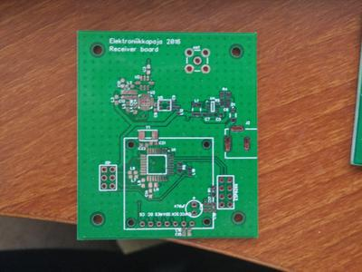
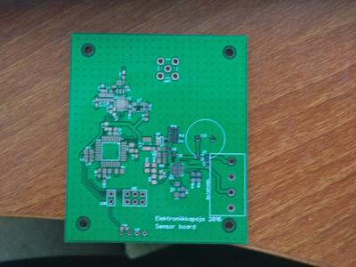
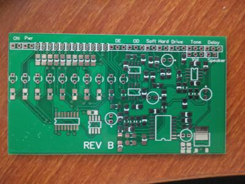
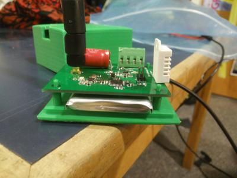
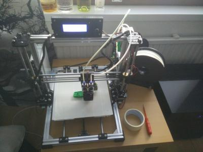
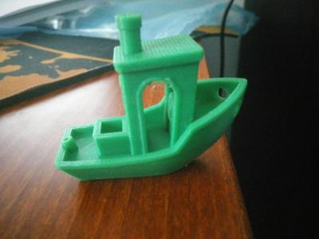
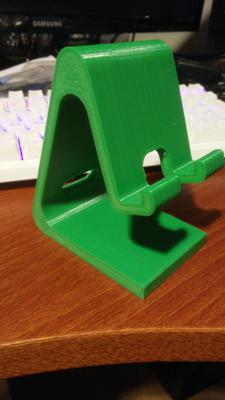

Skills
I have accumulated skills through various projects in school and industry. Projects related to skills are linked.
Electronics
I like to design and build electrical devices. I am mostly interested in embedded systems and PCB design. I have learned to document circuits in digital form. These means I have experience creating printed circuit board and schematic designs in ECAD software. I am also able to transfer these designs to the physical realm. I am familiar with generating proper files for professional PCB manufacturing. I have designed and ordered around 10 circuit boards. My experience with electronics range from designing radio transmitters to connecting my coffee pot to the Internet. (Plastics Product Design, Electronics workshop)
  {kind=link}
{kind=link}
{kind=link}
Prototyping
I have worked in projects creating proof-of-concept, functional and mockup prototypes. In school projects these prototypes usually were functional prototypes which proved that the electronical and mechanical design worked. In industry I have assembled prototypes for Vaisala OPT 100 DGA (Dissolved Gas Analyzer). DGA prototypes were utilized for measurement performance and type testing of the product. These have taught me the fundamental way of thinking about reaching the minimum viable product. I acknowledge that it is important to get product to the market as fast as possible. This was the case while working with the DGA. (Plastics Product Design, Electronics workshop, OPT100 DGA Vaisala)
{kind=link}
3D-printing
I am familiar with additive manufacturing techniques and have built my own 3D-printer. I know the limits and strengths of additive manufacturing. I learned the theory behind additive manufacturing in Aaltonaut courses. This inspired me to study the practical side on my own. I have used 3D-printer for creating enclosures and functional parts for prototypes. (ADD basics, Electronics workshop)
  {kind=link}
{kind=link}
{kind=link}
Teamwork
Aaltonaut courses are mostly done in teams which has taught me valuable skill of working with different people. In the industry I have worked in interdisplinary product development team as a trainee. From the industry I have learned working with Lean and scrum principles. This means that I am familiar with using tools like Kanban-boards and sprints in product development process. I have used these methods daily while working with the DGA product. I have also used scrum-ban methods in agile software development while creating new guild website. (ADD basics, OPT100 DGA Vaisala)
Communication
In the courses I have learned to brainstorm and present ideas. I also have learned different pitching techniques. I have tried presenting ideas in different forms, for example in video format, poster and traditional slides presentation. These have improved my skill to present myself in English. (Plastics Product Design, Product: from an Idea to the Store)